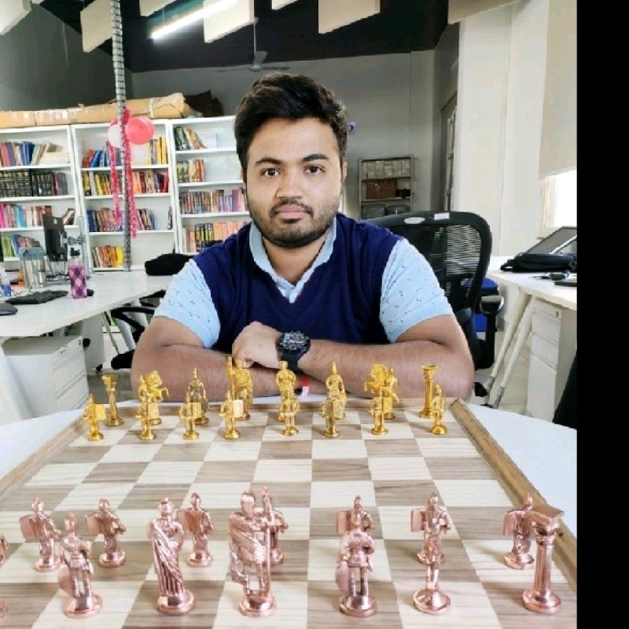

Python Developer | AI/ML | OCR | Django | Lawyer
Pune, Maharashtra, India
About Me
Experienced developer with a passion for creating elegant AI and OCR-based solutions. Skilled in Tesseract, OpenCV, Python, Django, and cloud-native deployments. With a unique background as both a developer and lawyer, I thrive at the intersection of tech and compliance.
Experience
- Cognizant — Software Engineer - Django (Sep 2022 - Present)
- Secure Meters Limited — Software Developer - AI (2019 - 2022)
- Five Splash — Software Developer - .NET AI (2018 - 2019)
- Kansoft Solutions — Web Developer - MVC .NET (2017 - 2018)
Projects
- Sanskrit Manuscript OCR — Used Tesseract LSTM to digitize 15,000+ ancient scripts.
- KPN Telecom APIs — Built REST APIs using Django for Netherlands-based telecom giant.
- Invoice Reader — Created invoice parsing pipeline using .NET + OCR.
- AI Data Pipeline — Designed and deployed full NLP-based OCR workflow.
Skills
Python
Django
OCR
Tesseract
OpenCV
REST API
AI/ML
.NET
Angular
Agile
Certifications
- AMCAT Certified Software Development Trainee
- AMCAT Certified Data Processing Specialist
- AMCAT Certified English Proficiency
Publications
- "Contour Detection in Sanskrit Manuscripts" – Computational Linguistics